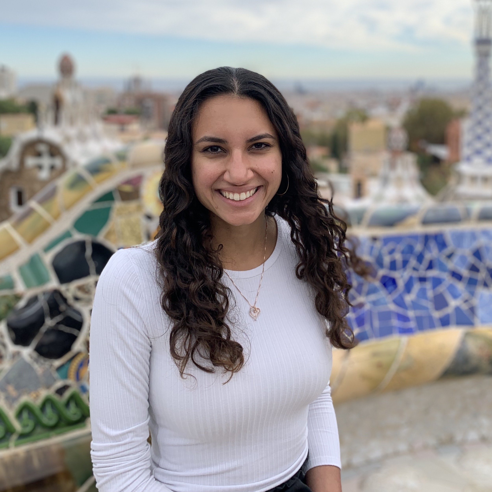

Annamarie E. Bair
UPF Complex Systems Lab
MIT MEng Computer Science and Engineering | 2019
MIT SB Computer Science and Engineering | 2018
Github | LinkedIn | CV
I'm currently a Fulbright grantee conducting research on modeling biological
intelligence with Dr. Ricard Solé's Complex Systems Lab at Pompeu Fabra University
in Barcelona, Spain. Previously, I received my Master's and Bachelor's degrees
at MIT in Computer Science. In Fall 2020, I will begin a PhD in Machine Learning
at Carnegie Mellon University. My research interests include machine learning,
statistics, complex systems, and neuroscience.